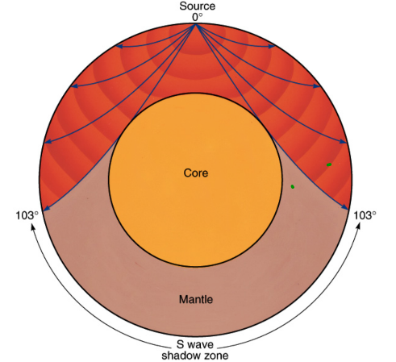

Seismic Waves
What are seismic waves?
Seismic waves are shockwaves from earthquakes. They are detected using seismometers.
The three types of wave produced are:
- Primary (P) waves
- Secondary (S) waves
- Surface waves (not needed for GCSE)
Primary waves are longitudinal and travel faster than secondary waves. They can travel through solids and liquids.
Secondary waves are transverse and travel slower than primary waves. They can only travel through solids.
Behaviour of seismic waves
- The speed of both types of wave increases with depth through the mantle
- The waves travel in curved paths as their speed changes gradually through a material
- When the state of the transmitting medium changes abruptly, e.g. when moving from solid to liquid, the wave direction also changes abruptly
- The change in direction because of a change in wave speed is called REFRACTION(covered in more detail in Y10)
Determining the structure of the Earth
Scientists have made guesses about the structure of the Earth and then compared their predictions to seismic wave observations made on the surface.

From this we know that the Earth has a structure comprising of:
- a thin crust
- a mantle, extending almost halfway to the Earth’s centre which has all the properties of a solid except that it can flow very slowly
- a core, with just over half of the Earth’s radius, made of nickel and iron the outer part of which is liquid and the inner part of which is solid